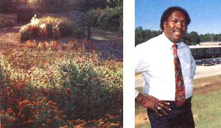

by Drew Leviton
Some of President Franklin D. Roosevelt's happiest days were spent at
the Little White House in Warm Springs. Here, he received treatment for
polio in the 88°F waters and built a model farming community in nearby
Pine Mountain Valley-and it was here that he died.